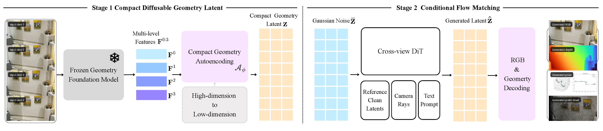
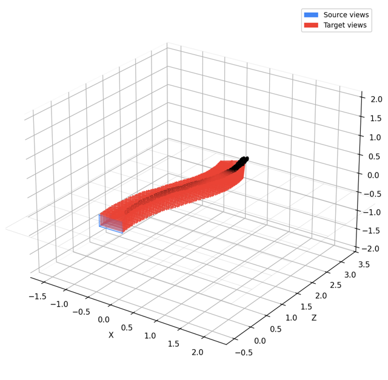
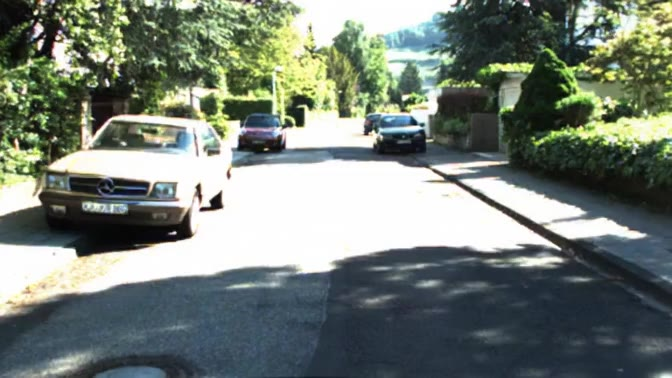
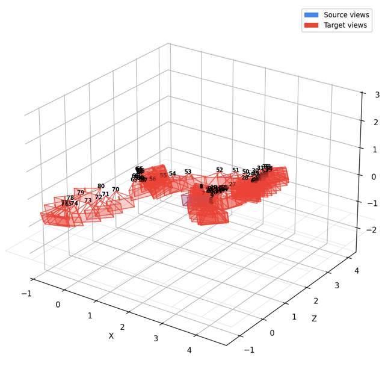

Encode & distill
Freeze the geometry foundation model; learn only the compact multi-level codec.
Geometry-native visual generation
Learning a Geometry-Native Latent Space for 3D-Consistent World Generation.
We distill multi-level geometry-foundation features into one small, well-conditioned state, then perform flow matching directly in that state. Every generated latent decodes into appearance and 3D—without reconstructing geometry as an afterthought.
TL;DR
Put geometry inside the generated latent, not around an appearance-only latent as an external constraint. GAE compresses 3,072-channel geometry features to a structured 128-channel state that remains decodable to both RGB and geometry.
01 / Geometry latent
A useful generation state must do more than reconstruct. GAE-64 favors compact generation and trajectory consistency; GAE-128 preserves the strongest reconstruction and cross-view correspondence. Together, the two operating points define a favorable Pareto frontier relative to the baselines.
Each metric is normalized so that the best result lies on the outer ring. The axes jointly cover latent representation quality, DiT-generated RGB appearance, and the 3D consistency of generated views.
Best result on every axis is on the outer ring.
02 / Method
The frozen foundation encoder supplies multi-view geometric structure. A learned codec makes that structure compact and diffusable; flow matching generates it; the output heads decode RGB, depth, pose, and point-cloud geometry from the same final state.

Freeze the geometry foundation model; learn only the compact multi-level codec.
Run x-prediction flow matching with text, reference evidence, and metric rays.
Recover RGB, depth, pose, and point-cloud geometry from the same generated latent state.
03 / Image-to-video
Browse 21 scenes spanning RealEstate10K and ScanNet++. From one observed frame and a metric camera path, GAE jointly generates an 81-view 672 x 378 RGB sequence and a geometry state. Select a scene, play the GAE-predicted RGB or generated depth, watch the progressive geometry reconstruction alongside the generated sequence.

Playback could not start in this browser. Open the MP4 directly ↗
04 / Large-motion scenes
Nine scenes spanning city streets, landscapes, and interiors. Each generated video is paired with a progressive geometry reconstruction.

Playback could not start in this browser. Open the MP4 directly ↗
A sunlit drive along a leafy residential street.
05 / MVS-Synth
Eight MVS-Synth scenes rendered from the GTA V engine explore city streets, intersections, and overpasses. From one observed frame and a metric camera path, GAE generates an 81-view 672 x 378 RGB sequence and a geometry state. Select a scene, play the GAE-predicted RGB or generated depth, watch the progressive geometry reconstruction alongside the generated sequence. The distant sky backdrop is filtered from the reconstructed geometry.

Playback could not start in this browser. Open the MP4 directly ↗
06 / RGB + geometry
Each column shows a method's generated RGB sequence alongside its reconstruction score. All methods receive the same RealEstate10K scene, 9 views, interval 10, and one conditioning frame; the reference is DA3 run on the real target frames. Compare appearance quality alongside the measured geometric consistency.
07 / Latent comparison
Six latent representations are compared under the same DiT training and sampling protocol: GAE, RAEv2, the Stable Diffusion VAE, the Wan2.1 video VAE, and raw DA3 features from two layers. Evaluation uses 64 RealEstate10K and 64 ScanNet++ scenes, with 9 views, one conditioning frame, guidance scale 2.0, and 50 sampling steps. Videos are generated from noise conditioned on the reference image. DA3-based latents use a 252 px input with 14 px patches; the other latents use a 256 px input with an 8 px grid. Clips are resampled to 252 px for display and evaluation. Each PSNR value is averaged over the clip against the corresponding reference frames.
08 / Independent 3D check
A frozen VGGT evaluator independently reconstructs geometry and camera motion from Wan2.1, RAEv2, and GAE outputs generated from the same reference image and prescribed trajectory. Inspect the generated videos and how closely each recovered camera path follows the target poses.
09 / Text to image
Twenty text-generated examples span characters, robots, interiors, food, sculpture, and stylized portraits. Select a scene to compare its RGB image, depth map, and interactive point cloud, decoded from the same generated latent.
Prompt
10 / Paper
The latent space is a central design choice in modern visual diffusion, yet most latent spaces are optimized for single-image appearance rather than multi-view geometry. Pixel VAEs are compact and decodable but weakly geometry-aware, whereas raw geometry-foundation features carry depth, pose, and correspondence but are high-dimensional, ill-conditioned, and spectrally near-degenerate as a diffusion state.
GAE: Learning a Geometry-Native Latent Space for 3D-Consistent World Generation compresses frozen geometry-foundation features into a small latent whose generated states decode jointly into RGB and geometry. Spectral, semantic, and spatial diagnostics guide the compact representation; x-prediction, train/inference-aligned reference conditioning, and metric ray-space pose conditioning make it a controllable visual world-model state.
Read the full paper ↗Read the paper, download the PDF, or explore the code.